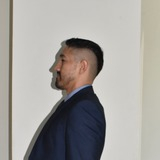
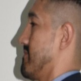
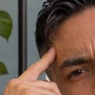
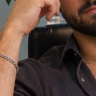

Protocolo de Captura & Character Sheet Maestro (Norma Glauber)
La consistencia visual no se arregla con prompts; se fija con tomas reales a 90°. A continuación tienes la lista canónica de tomas con su miniatura real para las fotos ya capturadas, y una tarjeta en neón para las zonas corporales pendientes de captura en el set.

| Código | Nombre de Toma | Giro / Ángulo | Función Biométrica | Miniatura / Zona Neón |
|---|---|---|---|---|
| R-01 | Frontal Neutro | 0° (Mirando al lente, boca cerrada) | Ancla primaria facial: distancia interpupilar, mandíbula y cejas. |
|
| R-02 | Frontal Hablando | 0° (Boca entreabierta, gesto activo) | Referencia para sincronización labial y movimiento de boca. |

|
| R-03 | Sonrisa Real Amplia | 0° (Dientes frontales superiores visibles) | Candado para que la IA muestre tus incisivos reales (DSC_0057). |

|
| R-04 | Tres Cuartos (45°) | 45° (Como puerta entreabierta; se ven ambos ojos) | Volumen tridimensional del pómulo y transición de la mejilla. |
|
| R-05 | Perfil Izquierdo 90° | 90° estricto (Giro completo a pared, ojo trasero oculto) | Silueta pura lateral: ángulo nasolabial y plano del maxilar izquierdo. |

|
| R-06 | Perfil Derecho 90° | 90° estricto (Ojo izquierdo desaparece detrás de la nariz) | Candado Crítico: Recta nasal de tu rinoplastia 2011 (DSC_0090). |
 |
| R-07 | Primer Plano Nariz Izquierda | Macro a 90° (Cámara cerca llenando el encuadre) | Auditoría de puente óseo, punta sutil y base de orificios nasales. |
 |
| R-08 | Primer Plano Nariz Derecha | Macro a 90° (Dorso nasal completo) | Eliminación definitiva de cualquier alucinación de pico o joroba. |

|
| R-09 | Picado Suave | Cámara ligeramente arriba de los ojos, tú miras al lente | Perspectiva superior y detalle del cabello con copete rebelde. |

|
| R-10 | Contrapicado Suave | Cámara ligeramente abajo de la barbilla, tú miras al lente | Definición del ángulo mandibular, cuello y base de barba. |

|
| R-11 | Mirada Lateral (Izq / Der) | Cabeza fija de frente, solo se mueven los ojos a 180° | Calibración del iris y mirada periférica natural sin girar el cuello. |
ZONA OCULAR LATERAL
⚡ FALTANTE EN SET
|
| R-12 | Mirada Vertical (Arriba / Abajo) | Cabeza fija de frente, solo se mueven los ojos | Calibración de párpados y pestañas en miradas arriba/abajo. |
ZONA OCULAR VERTICAL
⚡ FALTANTE EN SET
|
| R-13 | Detalle Ojos y Cejas | Macro frontal enfocado al 100% en los ojos | Forma almendrada, densidad y textura de cejas oscuras. |
 |
| R-14 | Detalle Barba y Mandíbula | Frontal y 3/4 en plano cerrado | Largo, densidad y línea de afeitado limpia en mejillas y cuello. |
 |
| R-15 | Detalle Cabello & Nacimiento | Frontal y cenital suave | Fade lateral alto y textura del copete rebelde natural al frente. |
|
| Código | Nombre de Toma | Encuadre & Postura | Función en el Modelo | Miniatura / Zona Neón |
|---|---|---|---|---|
| C-01 | Medio Cuerpo Brazos Cruzados | Cintura hacia arriba, postura firme, polo negro | Puente entre rostro y torso; define hombros, bíceps y porte. |

|
| C-02 | Medio Cuerpo 3/4 | Giro a 45°, brazos relajados a los costados | Proporción de pecho, espalda y postura relajada. |
TORSO & BRAZOS 45°
⚡ PENDIENTE SET
|
| C-03 | Cuerpo Completo Frontal | De pies a cabeza, erguido, ciclorama completo | Estatura, proporción de piernas, torso y calzado (DSC_0001). |

|
| C-04 | Cuerpo Completo 3/4 y Perfil | Giros a 45° y 90° de cuerpo entero | Postura vertebral y volumen tridimensional del físico completo. |
POSTURA 90° CUERPO
⚡ PENDIENTE SET
|
| C-05 | Serie de Progreso Físico | Frontal, perfil y espalda en ropa de gimnasio ajustada | Repetibilidad mensual para comparar avance muscular de gym. |
PROGRESO GYM 360°
⚡ MEMBRESÍA
|
¿Lo estamos haciendo bien o estamos agarrando pal' monte?
Análisis honesto y comparativa frente a los 4 métodos de creación de personajes y clones digitales con Inteligencia Artificial utilizados en la industria actualmente.
1. ¿Lo estamos haciendo bien?
SÍ, TOTALMENTE. La Guía de Glauber que aportaste (20 tomas divididas en 15 de rostro y 5 de cuerpo) es el estándar de oro para entrenar LoRAs de alta fidelidad en Flux.1 [dev] y Stable Diffusion. No es ocurrencia: es la estructura exacta que usan los mejores creadores de clones del mundo.
2. ¿Estamos inventando la rueda?
NO. Inventar la rueda sería programar un algoritmo nuevo desde cero. Lo que estamos haciendo es implementar el protocolo de captura física para alimentar la tecnología que ya domina el mercado: ComfyUI + Fine-Tuning LoRA local sin censura ni distorsión.
3. ¿Dónde sí agarramos pal' monte?
En querer sacar el render final antes de tomar las fotos. El error que causó la nariz aguileña deforme fue pedirle a la IA que imaginara tu perfil a 90° sin haberle dado la foto real DSC_0090.JPG. Al no tener la referencia, la IA promedia rostros de internet y alucina.